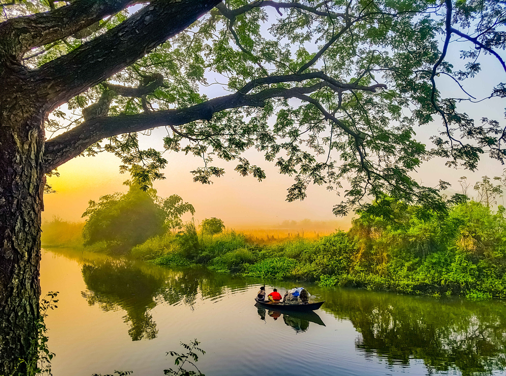
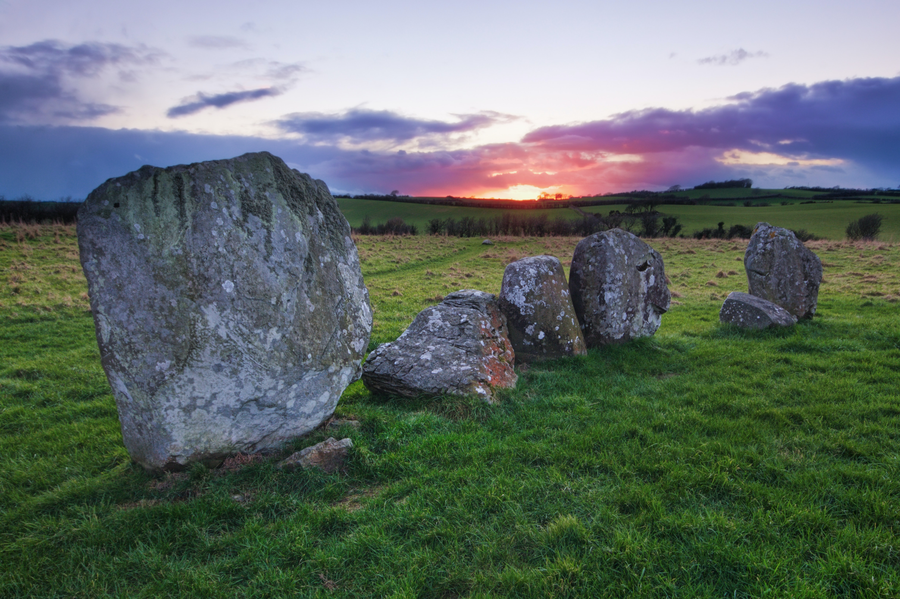
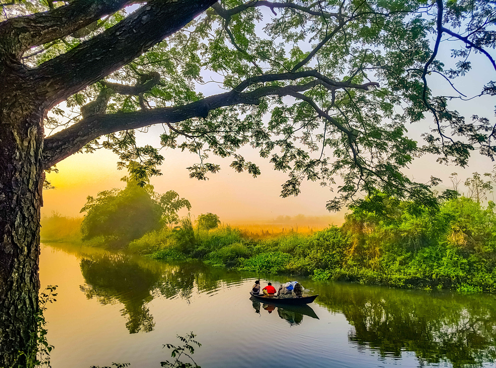
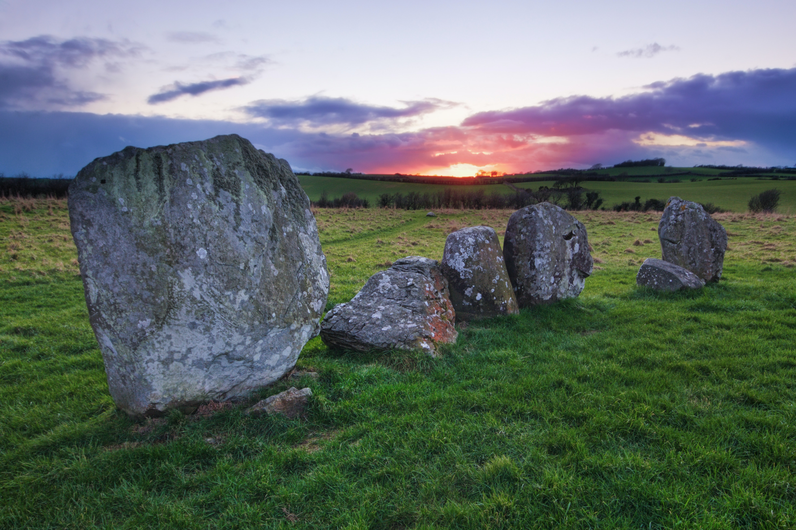

Dalal Ak Diam
Les îles du Saloum, également connues sous le nom d'îles du Delta du Saloum
Les îles du Saloum, également connues sous le nom d'îles du Delta du Saloum, sont un archipel situé dans la région de Fatick, au Sénégal, en Afrique de l'Ouest. Cet archipel est formé par l'embouchure du fleuve Saloum, qui se jette dans l'océan Atlantique. Les îles du Saloum sont réputées pour leur beauté naturelle, leur biodiversité, et leur importance culturelle et historique. Voici quelques points clés sur les îles du Saloum

 





, le plat national sénégalais.jpg)